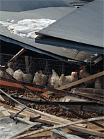

雪害で被害を受けた産地への支援に取り組んでいます
2月の二度にわたる大雪で、生協に農産物を供給している産地でも大きな被害が出ています。県内の生協では、甚大な被害を受けた産地生産者の皆さんを支援しようと、緊急募金活動に取り組んでいます。
コープみらい
2月15日までに、関東甲信に降り続いた雪の影響で、コープみらいとお付き合いのある産直産地ではハウスの屋根が雪の重みで倒壊するなど大きな被害が出ています。コープみらいでは被害を受けられた方々の一日も早い復興を願い、「関東甲信 大雪被害支援募金」に取り組みます。
- 募 金 名：
- 関東甲信 大雪被害支援募金
- 期 間：
- 3月3日（月）～4月11日（金）＊募金の受付は終了しました
- 受 付：
- コープデリ宅配
- OCR注文書の6ケタ注文欄で受付（カッコ内は注文番号）
- 申込み1口 100円（286427）・1口 1,000円（286532）
- 店舗・コーププラザ（さいたまエリアのみ）
- 備えつけの募金箱で4月20日（火）まで受け付けます。
- 問い合わせ：
- （さいたまエリア）コープみらい埼玉県本部
- 参加とネットワーク推進室 048－839－2711（9時～17時 日曜・祝日休み）
（情報提供：コープみらい）
パルシステム埼玉
今回の降雪により、生産者に甚大な被害が出ており、産地の施設における被害額は、15億円を超える見込みとなっています。雪の重さにより、ハウスや鶏舎が倒壊し、ほ場や果樹も被害を受けています。パルシステムでは、今回被害を受けた産直産地等を対象に、緊急支援カンパを実施します。
- 募 金 名：
- 雪害緊急支援カンパ
- 期 間
- 3月3日（月）～5月2日（金）＊募金の受付は終了しました
- 受 付：
- 「現金によるカンパ」と「ポイントによるカンパ」
- OCR注文書の6ケタ注文欄で受付（カッコ内は注文番号）
- 「現金によるカンパ」
- 申込み1口 300円（184799）
- 「ポイントによるカンパ」
- 申込み1口 300ポイント（193526）
- 問い合わせ：
- 生活協同組合パルシステム埼玉 048－432－7093
（情報提供：パルシステム埼玉）
生活クラブ生協
|  |
生活クラブの埼玉県内の生産農家でもハウスの倒壊などにより来年の春まで影響が必至という地域もあり、出荷するためにハウスから潰れていないものを掘り起こしている現状です。県内生産者へ組合員の皆さんの気持ちをまとめ、お見舞いを届けたいと思います。
- 募 金 名：
- 緊急 お見舞カンパの取り組み（雪による被害）
- 期 間：
- 3月3日（月）～3月21日（金）＊募金の受付は終了しました
- 受 付：
- 3月3日（月）より配布「生活クラブニュース」に必要事項を記入し配達便にて提出。
- 問い合わせ：
- 生活クラブ生活協同組合 048－839－4881
写真（左）雪害で倒壊したハウス（深谷市岡の沃土会）
写真（右）約4万1000羽が下敷きとなった生活クラブたまご坂戸農場
（情報提供：生活クラブ生協）
埼玉県労働者共済生協（全労済埼玉県本部）
現在、全労済埼玉県本部では、各共済制度にご加入で被害に遭われた皆様への対応準備をすすめており、最優先で業務を行なう所存です。現場調査は、全国から職員の支援を受け、3月6日より木曜日～日曜日を1クールとして、熊谷市等の県北部を中心に当面実施いたします。また、県本部職員も同様に支援エリア以外を対応していきます。可能な限り早期にお伺いできるよう体制を強化しています。
（情報提供：全労済埼玉県本部）
東都生協
各地で観測史上最多となる降雪量が記録された今回、雪の重みによって栽培施設のパイプハウスが倒壊してしまったばかりか、集荷施設や肥料の製造設備まで倒壊してしまった産地もあり、被害額は甚大なものとなりました。東都生協では、被害を受けた産地と生産者のみなさまにお見舞いを申し上げるとともに、被害産地支援のための募金に取り組みます。
- 募 金 名：
- 大雪被害の産地支援募金
- 期 間：
- 3月10日（月）～3月28日（金）＊募金の受付は終了しました
- 受 付：
- 3月3回～4月1回の注文書にて募金を受付。
- 注文書の特別企画商品注文欄に下記カッコ内の所定の番号と申し込み口数をご記入ください。
- 申し込み：
- 1口200円（365920）
- 問い合わせ：
- 東都生活協同組合 03－5374－4750（代表）
（情報提供：東都生協）
その他の取り組み（埼玉県生協連）
生協組合員の活動ネットワークを広げようと、学びあい、交流の活動をおこなっている生協ネットワーク協議会では、毎年春にJA埼玉県女性組織協議会と交流を深めてきました。今回の大雪は、埼玉県内の農家に甚大な被害をもたらしたことから、JA産地の皆さんにお見舞や励ましのメッセージを伝えようと、埼玉県の農家の皆さんに宛てたメッセージを生協組合員に呼びかけています。
 次の記事 農家の皆さんに励ましのメッセージを届けました（3月24日掲載）
次の記事 農家の皆さんに励ましのメッセージを届けました（3月24日掲載）
お問い合わせ
下記または、それぞれの生協までお問い合わせください。
埼玉県生活協同組合連合会 048－844－8971